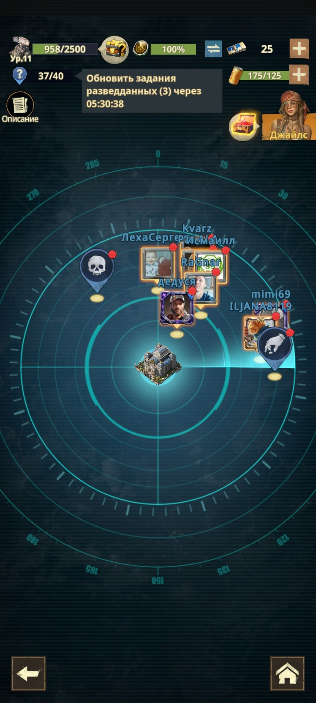
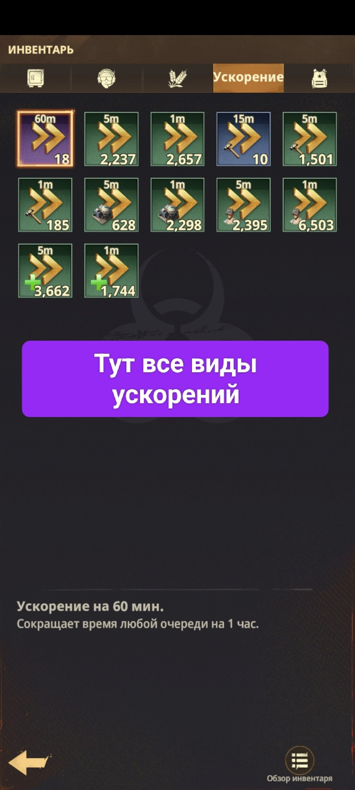
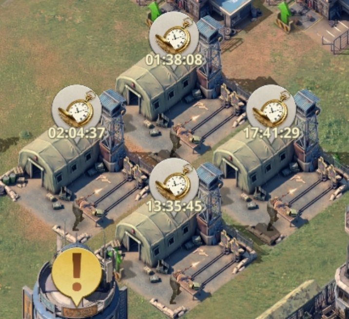

📔 Пятница
📔 Пятница ❓ За что получаем очки VS в Пятницу? 📡 Радар Выполняем все накопленные задания Радара.
⚡ Ускорение/завершение строек, исследований, тренировок Тратим накопленные ускорения, чтобы завершить или ускорить действующие стройки, исследования и тренировки солдат.
🪖 Обучение/тренировка солдат Обучаем/тренируем солдат разных рангов.

📡 Радар - копим все накопленные задания

⚡ Инвентарь → «Ускорение» - здесь все виды ускорений для строек, исследований и тренировок

🪖 Лагеря подготовки солдат - тренировка идёт с таймером, ускоряем/завершаем